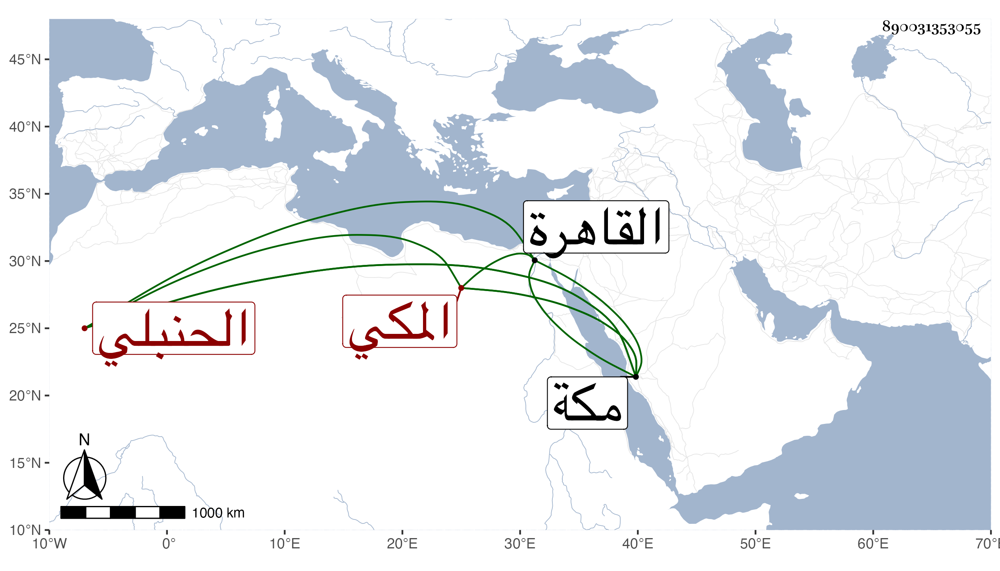

0902Sakhawi.DawLamic.ITO20230111-ara1.EIS1600.890031353055
Biography ID: 890031353055
1033
علي بن محمد بن عبد القوي بن محمد بن عبد القوي النور بن خير الدين أبي الخير المكي الحنبلي . ولد في صفر سنة خمس وأربعين بمكة ونشأ بها فحفظ القرآن وصلى به التراويح للأفضلية وألفية النحو والعمدة للموفق بن قدامة ومختصر ابن الحاجب ، وعرض واشتغل بالقاهرة وقد دخلها غير مرة وله نظم . مات بمكة في شوال سنة إحدى وثمانين . أرخه ابن فهد .
